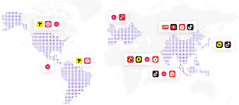
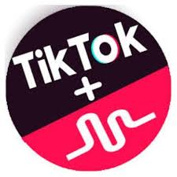
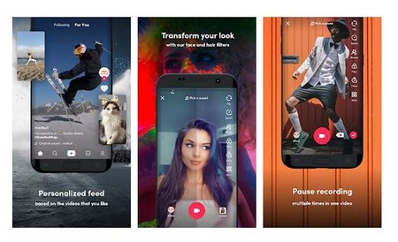
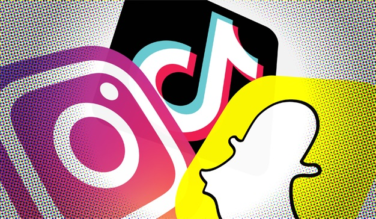
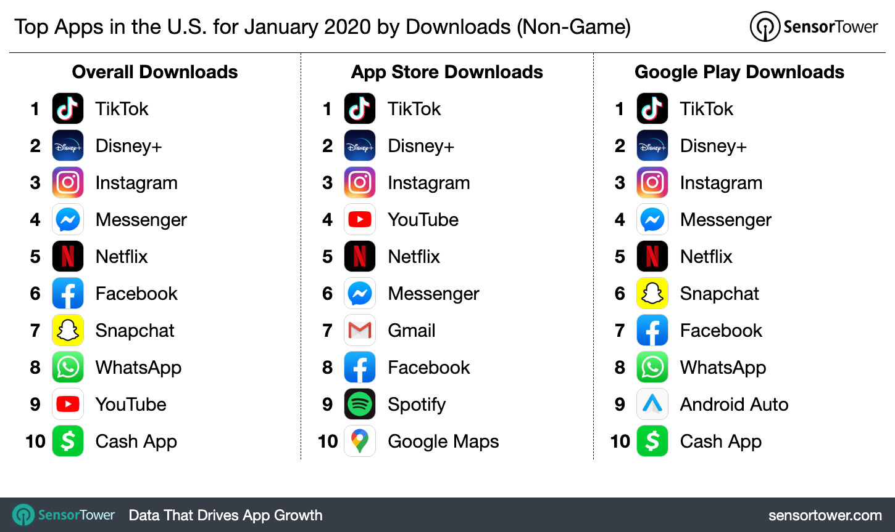

"TikTok: su historia y ¿Por qué es tendencia?"

En estos momentos no vemos más involucrados en el las redes sociales, donde se pueden hacer tendencia o caer en el olvido, por ejemplo la nueva red social con origen en china es una de las más usadas en este momento este red social con nombre de Douyin que significa “Sacudir la música” (nombre original y utilizado en china) o TikTok (en el resto del mundo), es una de las redes que esta teniendo más popularidad superando a Instagram, YouTube incluso a Facebook.
La mecánica inicial de esta red social es subir pequeños videos con clips musicales bailando o imitando a un cantante, poco a poco se ha ido agregando más cosas como tendencias utilizando hashtag, pequeños clips de comedia, imitando un corto de una película o serie de televisión.
Su Historia:
Esta aplicación fue desarrollada por la empresa de tecnología China Bytedance la cual es conocida en ese país por su aplicación anteriormente más popular Toutiao que es un
agregador de noticias basado en Inteligencia Artificial con aproximadamente 120 millones de usuarios en China.
Un poco de su creador:
El creador de Tik Tok es Zhang Yiming en el 2012 tenia la idea de que en el futuro se encontraba en los negocios de Internet por lo cual fundo la empresa de Bytedance.
Hijo de un funcionario y una enfermera, estudio Microelectrónica en la Universidad de Nankia aunque posteriormente cambio a Informática y se especializó en la Ingeniería de Software,
inicialmente nadie confiaba en sus proyectos pero al fundar su empresa y crear el agregador de noticias Toutiao dio un giro de 180 grados ya que actualmente es uno de los mejores Startup
con aproximadamente una valorización de 75 billones de dólares.
En el 2012 una de las aplicaciones más utilizadas era el buscador de la empresa Baidu (recordando que Google no se encuentra disponible en ese país), Zhang no pensaba hacer un buscador convencional si no que en sus aplicaciones que fue lanzando se encontraba disponible el agregador de Toutiao haciendo más popular la empresa.
Después con el lanzamiento de TikTok en el 2016 con 200 días de lanzamiento tuvo una gran demanda con millones de usuarios.

En el 2017: Bytedance compro Music.L por $100 millones de dólares permitiendo migrar las cuentas a Tik Tok, celebridades e influencers popularizaron la aplicación participando en varios “Challenge”, así mismo ingreso a el mercado de Estados Unidos siendo la aplicación más descargada en ese año, en ese año fue disponible en más de 150 mercados y 75 idiomas facilitando más la expansión a diversos países.

En el 2018: crece la demanda en Estados Unidos ya que tuvo 80 millones de descargas y 800 millones en el resto del mundo,
se potencializan los #Challenge que pueden ser de baile, música, humor o animación.
Las estadísticas indicaban que 41% de los usuarios pertenecían a la Generación Z.

En el 2019: se encontraban 500 millones de usuarios activos al mes, el 2/3 de los creadores de contenido eran mujeres, así mismo en Estados Unidos el ranking musical ha permanecido en éxitos #1, se estimo que el promedio de tiempo en que se utilizaba la aplicación era de 52 minutos por día, en ese momento la empresa estaba valorada en 75 millones de dólares, así mismo la aplicación tenia más usuarios que Twitter y Snapchat Juntos y se estimo que 1500 millones de descargas en el mundo.

En el 2020: Nacen varias competencias directas, se calcula un 44% de descargas desde la India, 1 billón de videos vistos por día, es la 2da aplicación más descargada en el mundo después de Whatsapp y tiene más descargas en Instagram pero aún no se considera rentable como negocio.

¿Porqué es tendencia:
Actualmente las redes sociales como Facebook, Instagram y YouTube cuentan con varios anuncios, que a comparación de TikTok por el momento no tiene esta modalidad.
- Los influencer y celebridades, ayudan a popularizarla al realizar los #Challenge o utilizarla más que las demás redes y sugerirla
- Por el enfoque que tiene ya que la prioridad son los videos.
- Por que con los filtros o características que maneja y que no se necesita tanta edición como por ejemplo los videos de YouTube permite que sea más práctico y fácil de usar.
- En este momento que nos encontramos en cuarentena y al tener un poco más de tiempo libre sumando los puntos anteriores se vuelve más popular.
En conclusión cada día hay más redes sociales si deseamos emprender en este tema sugiero considerar tanto la historia de dichas redes y ver si se encuentra alguna necesidad que todavía no cumpla alguna aplicación o alguna mejora que te haga diferente de las demás aplicaciones.